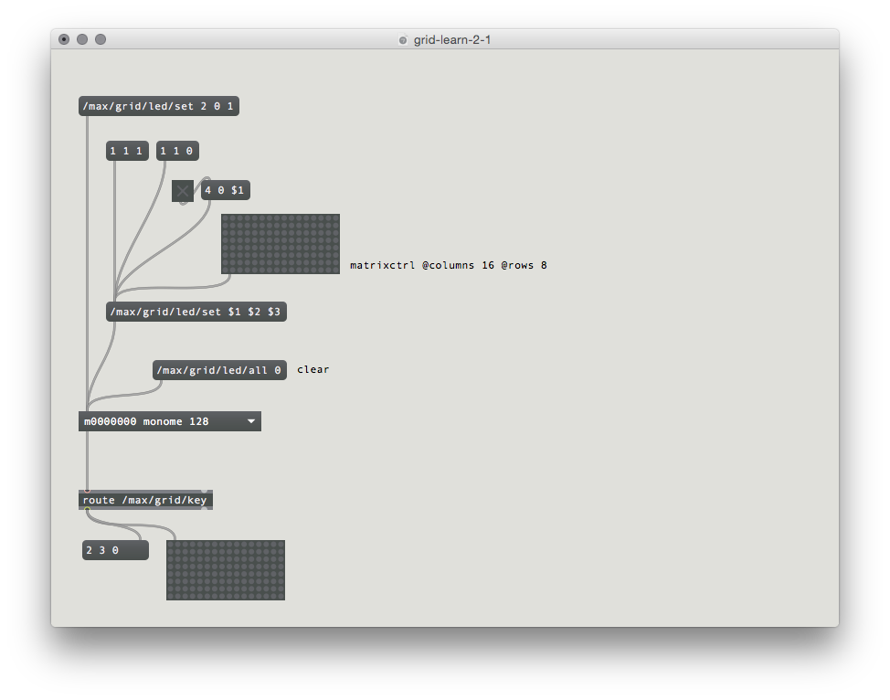

Max is... (INSERT HERE)
If you haven't yet run the Monome installer, do so first by going here:
See grid-learn-1-1.maxpat for this section.
To communicate with grids we trade OSC messages with serialosc. serialosc is translates OSC messages to streams of numbers over USB.
First we will show how to talk to serialosc.
Open Max and start a new patch.
Create a new object (press N) and type bpatcher serialosc and then hit enter. A bpatcher window will appear, resize this to match the long rectangle.
Plug in your grid and it will appear in the serialosc box. If you connect more than one grid, you can choose which device to communicate with via the dropdown.
Note: this box you've imbedded isn't serialosc itself, which is an invisible daemon on your computer. This box is a helper patcher to simplify using serialosc. We'll refer to this helper as serialosc, hopefully without much confusion.
Messages are sent to serialosc through the top left inlet, and received out the bottom left outlet.
See grid-learn-2-1.maxpat for this section.
To see what is coming from the grid, create a print object and connect the left outlet of serialosc to it. Open the max console (Window -> Max Console) and press some keys on the grid. OSC data will be displayed on the console.
Examining the output, key data fits this form:
/monome/grid/key x y zWhere x,y is the position and z indicates key down (1) or key up (0).
Other messages (such as connect and disconnect) come from this same outlet, so we want to filter for the key messages.
Change the print object to route /monome/grid/key and then see the output from the route.
We now have a list of 3 numbers according to each key action. Use an unpack to break this down further into individual numbers. Create a 16x8 matrixctrl object by typing:
matrixctrl @columns 16 @rows 8Connect the output of the route to this matrixctrl for a graphical display of the grid's key state.

Above the serialosc box create a message (push M) and type:
/monome/grid/led/set 2 0 1Connect this to the left inlet of serialosc.
Clicking this box will light up LED 2 in row 0. The message format is:
/monome/grid/led/set x y zThis is similar to the key input message, where z is on (1) or off (0).
Using Max's list methods, use $1 $2 $3 to change LEDs more dynamically. With a single message box as a sort of funnel, we can change various positions with message boxes, toggles, and a matrixctrl.
To clear the entire grid, use the following message:
/monome/grid/led/all 0
Connect the output of
route /max/grid/keyto the matrixctrl which above serialosc which changes LEDs.
You now have a coupled interface, where the key state is reflected by the the LEDs.

The most fundamental decoupled interface is an array of toggles. We can accomplish this easily by ignoring the key up state, switching the LED state only on key down.
Remove the connection to the LED-driving matrixctrl. We can filter out key-up messages by re-arranging the order of the key output, using a route object:
$3 $1 $2
route 1By moving the key state (z, here as $3) to the front, the route object will only pass messages where this first number is equal to 1. What comes out of route is just x and y. We can use this to toggle a matrixctrl by adding inc to the end of the message thusly:
$1 $2 incConnect this to the input of the matrixctrl and we have a toggle bank.

Now we'll show how basic grid applications are developed by creating a step sequencer. We will add features incrementally:
See grid-learn-3-1.maxpat for this step.
This works identically to our previous "decoupled interaction" example, but we want to only use the first six rows. So we sort them out inside the /p keys/ subpatcher:
$2 $1 $3
route 6 7By switching the first and second elements and then putting them into the route object, rows 0-5 are passed to the right outlet. We'll then pass key-down messages only to the matrix toggling.


See grid-learn-3-2.maxpat for this step.
We can create a "play head" with a simple counter.

To see the play position on the bottom row, we will turn on the corresponding LED position after first clearing the entire row. We can clear a row by using a new OSC message:
/monome/grid/led/row 0 7 0 0where the format of the message is:
/monome/grid/led/row x_offset y d[...]Here y is 7, the last row. Check out the full OSC spec for more information on this message.
After we clear the row, we turn on the corresponding LED with a normal single-LED message:
/monome/grid/led/set $1 0 1Now when you turn on the clock, you'll see the playhead moving along the bottom row.
See grid-learn-3-3.maxpat for this step.
As the playhead moves we will read the contents of the corresponding column and trigger events based on which toggles are turned on.
We do this by connecting a getcolumn $1 to the toggle matrix, driven by the play position. The matrix will output a list of 0/1 values which indicate the toggle states from top to bottom. We can "extract" only the 1's (on-states) using a zl sub 1 object. However, these values are index from 1, and we need them index from 0 (because this is how the grid indexes its LEDs) so we subtract one.
To indicate an "event" we will light up the corresponding x position in the 6th row:
/monome/grid/led/set $1 6 1
Similarly to the play position display, we need to clear the row between refreshes. But since more than one event can be displayed per step, we'll want to clear only once per group of triggers. We can accomplish the desired visual effect by clearing the row a delayed time after the events arrive.
Furthermore, to give the interface some delineation (not just a field of random LEDs) we will "clear" this row to a low-brightness level rather than completely off:
/monome/grid/led/level/row 0 6 5 5 5 5 5 5 5 5 5 5 5 5 5 5 5 5This /level/ message is in the format:
/monome/grid/led/level/row x_off y d[...]The format is similar to the monochromatic row message, but here d[...] is discrete LED values of 0-15. The message we're using has 16 of the number 5, which sets the entire 6th row to a dim level.
The "triggered" LEDs will be full brightness on top of this dim row.
Lastly, there's a tiny sound engine so you can actually hear something. Turn on the DAC and turn up the gain slider. Change the note values by opening up the p trigs subpatcher.
See grid-learn-3-4.maxpat for this step.
To liven up the sequencer, we will have key presses on the play row jump to the pressed position. But we also want a two-key gesture (holding down a first while pressing a second) to set the start-end loop boundaries. This requires keeping track of how many keys are being held down in the last row.
First we add the r counter receive object above the counter. Then the rest of the patching happens inside the p key subpatcher.

We unpack the incoming message and keep track of the accumulation of key ups and downs. This is accomplished by adding one for each key up and subtracting one for each key down. This looks weird as a Max patch, but tracing through it will reveal the logic.
The number of keys held will gate the output of the x position of the key. When a single key is pressed the x position goes out the left outlet of the gate, setting the position of the counter. This first position is also stored for potential use later.
If a second key is pressed (in this same row) while a first is held, the current x position pressed is set as the loop max (with a /max $1/ message) and the previously pressed x position is recalled and set as the loop minimum (with a /setmin $1/ message).
We've created a minimal yet intuitive interface for rapidly exploring sequences. We can intuitively change event triggers, loop points, and jump around the data performatively. Many more features could be added, and there are numerous other ways to think about interaction between key press and light feedback in completely different contexts.
See grid-learn-3-5.maxpat for a js implementation of this patch.